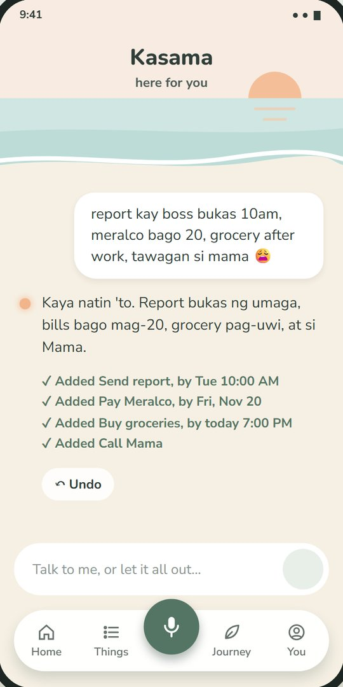
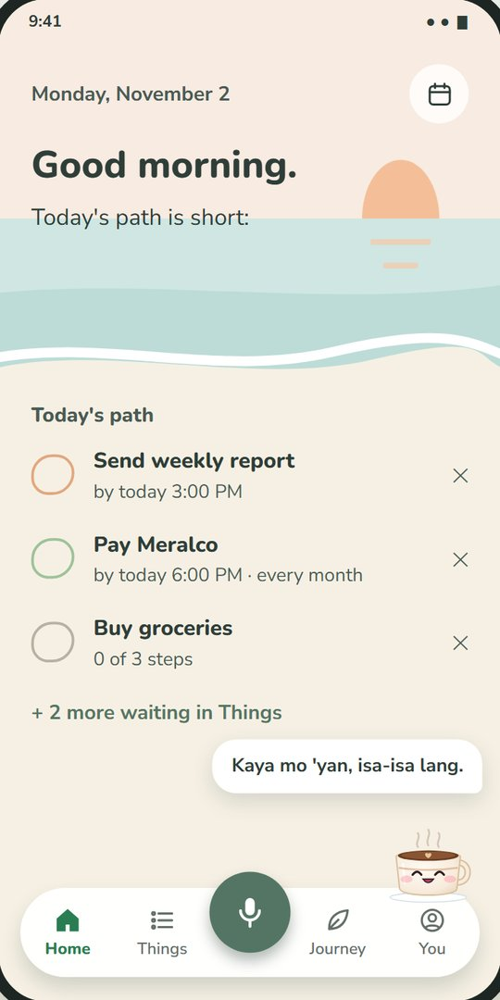
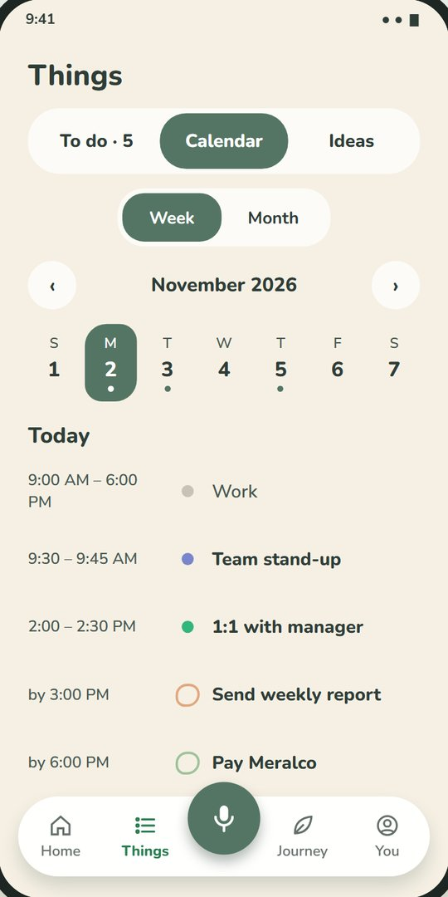
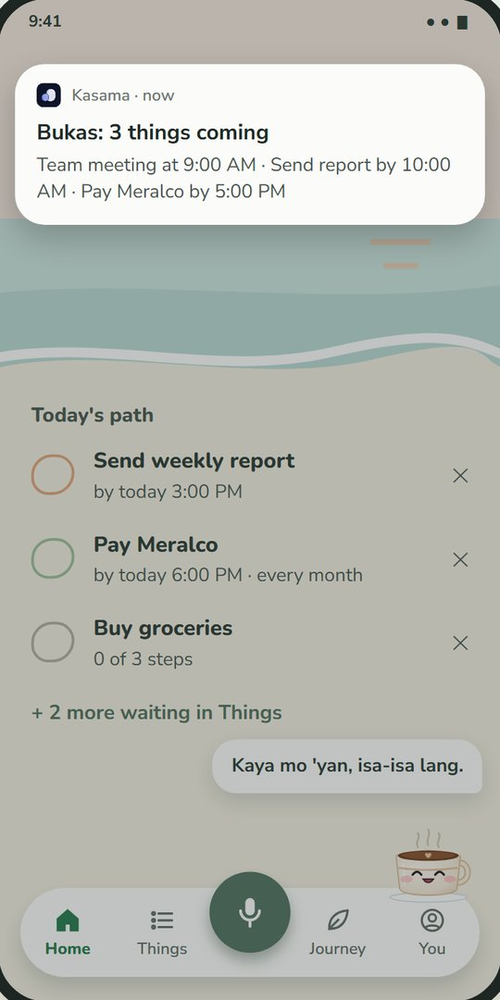
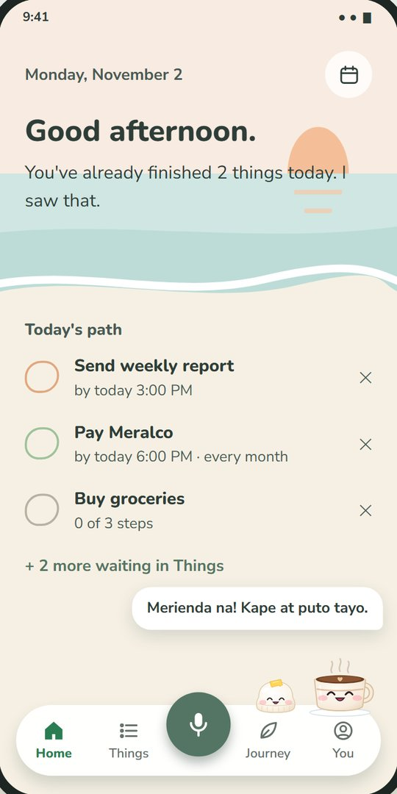

Kasama
How to use Kasama
A short guide. You don't need to learn everything at once. Start with step 3.
The bar at the bottom takes you to Home, Things, Journey and You. The round mic button in the middle is how you talk to Kasama.
1. First open
- Enter your name or nickname.
- Pick where you feel calm: Dagat, Bundok or Palayan.
- Tap Let's go.
2. Make it yours (You tab)
Changes save by themselves.
- Under Your fixed schedule, add your work, class and sleep times. Kasama won't plan over these. Name one block Sleep if you want a bedtime nudge.
- Set when you wake up and when you want your check-in before sleep.
- Choose how often you want reminders: Quiet, Calm or Remind me of everything.
- Choose how much cheering you want, what Kasama should do when things are hard, and your faith preference, if any.
3. Talk to Kasama
- Tap the mic button and speak. When you stop talking, your message sends by itself. You can also type on the Kasama screen.
- To chat or ask something, send one thought or question.
- To let it all out, send several thoughts at once, even in Taglish. Kasama sorts them into tasks and ideas.
- To change something, just say it, like "move Meralco to Friday".
- For an alarm, say "wake me at 5". This opens your Clock app.

If a reply is wrong or harmful, tap Report under it.
4. Your day (Home tab)
- In the morning, you see a short path of up to three things. The rest waits in Things.
- Later in the day, you see what's next. Tap Done when you finish it.
- To plan your day, tap Want me to find times for these?
- If something slips by, tap Fix my day or Move to tomorrow.
- At night, Home becomes your check-in. For each open task, choose Done, Tomorrow or Let go. Then pick how you feel: Masaya, Okay lang or Pagod.

5. Things tab
- To do: type a task, set when it's due and whether it repeats, then tap Add. Tap a task to add notes or small steps.
- Calendar: see your tasks by week or month. Tap Connect my phone calendar to show your own events.
- Ideas: write down an idea, then tap + to turn it into a to-do. Old ideas come back now and then.

6. Reminders
On Calm or Remind me of everything, Kasama sends a heads-up around 7 PM when something is coming tomorrow. Kasama stays quiet during your Sleep block, except for your bedtime nudge.

7. Journey tab
Here you'll find a note about your week, your moods, and what Kasama knows about you. Tasks that have waited two weeks or more ask Keep or Let go.
8. Little extras
- Your buddy, Kape or Puto: tap your buddy on Home for a kind word, or drag it anywhere. Drop it on Hide to put it away, and pick one again in You.
- Your people: add someone you trust in You, then tap Say hi. Kasama opens your messaging app, and you send the message yourself.

Good to know
- You need internet to talk to Kasama. Your lists and reminders stay on your phone.
- There's a daily limit on messages. It resets the next day.
- To erase everything, go to You and tap Delete my data. This can't be undone.
Kasama is not a therapist or an emergency service. If you are in danger, contact the NCMH Crisis Hotline (1553) or 911.